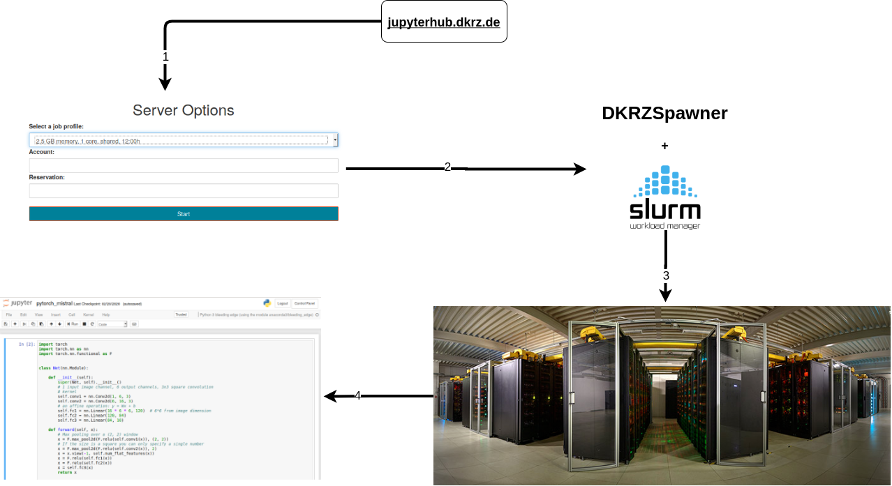
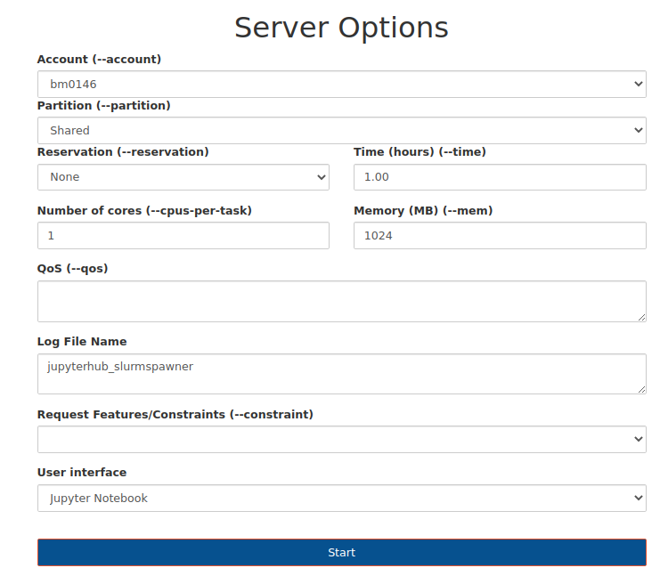

Jupyter * @ DKRZ
Interactive (Super) computing on Mistral
Sofiane Bendoukha
Deutsches Klimarechenzentrum (DKRZ)

* : hub/notebooks/lab/kernels
Agenda
- Introduction
- Spawning process
- Kernels
- Q & A
Introduction
What is, Why Jupyter?
The Jupyter Notebook
The Jupyter Notebook is an open-source web application that allows you to create and share documents that contain live code, equations, visualizations … Uses include: statistical modeling, data visualization, machine learning, and much more.
… jupyter.org
Jupyter Notebook on HPC
Using Anaconda, anyone can install and run Jupyter Notebooks on their local computer. However, to be able to run Jupyter Notebooks on a remote shared resource like our HPC, one would need to log into the HPC cluster, use the commandline to reserve computing resources and set up some cumbersome SSH tunneling as described here. A more convenient way to run Jupyter Notebooks on a shared resource is using JupyterHub.

- Need for more
"human-in-the-loop" workflows due to huge growth in data creation - Rapid iteration with tools like Jupyter notebooks
- In situ data analytics
- Adaptive scaling of computing resources
What we provide
-
Old way: Single Jupyter notebooks (ssh based)
- source
- limited support
- commandline based
./start_jupyter [Options]
-
Convenient way: Jupyterhub
- user-friendly
- full user support
- continuous maintenance and update
How it works?

How it works on Mistral?

Roadmap

What’s new in Jupyterhub 2.0?
- New (DKRZ) Spawner
- Added new partitions
- Added services for announcements and project accounts
- New Sphinx-based documentation
- New frontend
- Different spawner options (preset and advanced)
- Enabled loading own python environments (kernels)
- Enabled jupyter notebook extensions
- …
GUI

REST Web services

- announcements

- accounts

Documentation

Spawner options
Overview
Preset options form
| shared partition; 1,2 or 4 cores (2.5 GByte memory per core) | small development/testing projects |
| prepost partition; 1,2 or 4 cores (2.5 GByte memory per core) | as before, but allowing access outside of mistral (wget or similar) |
Advanced options form

Named servers
 |
* Named servers allow you to have more than one server running in the same time* skype
|
Kernels
Default system kernels
| Kernel | Source module |
|---|---|
| Python 2 | python/2.7.12 |
| Python 2 | anaconda2/bleeding_edge |
| Python 3 | anaconda3/bleeding_edge |
| Python 3 unstable | python3/unstable |
Bring your own environment
- Conda
% mkdir $HOME/kernels % conda create --prefix $HOME/kernels/your-kernel ipykernel python=3.x % source activate $HOME/kernels/your-kernel % python -m ipykernel install --user --name new-kernel --display-name="new kernel" % conda deactivate - Virtualenv
% python -m pip install --user virtualenv % python -m virtualenv --system-site-packages /path/to/new-kernel % source /path/to/new-kernel/bin/activate % pip install ipykernel % python -m ipykernel install --user --name new-kernel --display-name="new-kernel"
Using/Changing the kernels

Using/Changing the kernels

Jupyter extensions (1)

Jupyter extensions (2)

Future work
- Sharing solutions
- shared notebooks repositories (Git/hub/lab)
- external sharing services: Cloud (?)
- Enhanced spawning queue for Jupyterhub
- More dedicated system kernels and extensions (e.g. ML)
- Speed up loading Python packages
- Binder for Mistral
Feedback? Questions?
- Jupyterhub
- Documentation
- support@dkrz.de